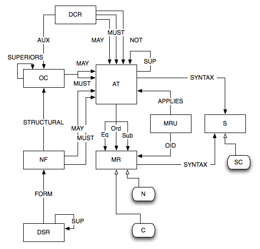
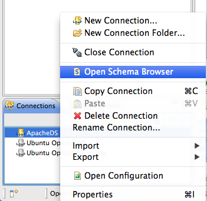
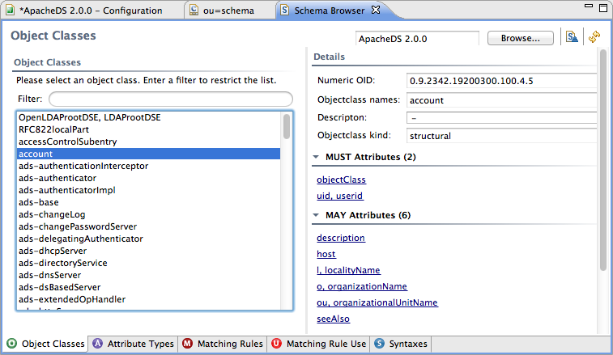

ApacheDS 2.0
Downloads
Documentation
- Basic User Guide
- Advanced User Guide
- Developer Guide
- Kerberos User Guide
- Configuration
- JavaDocs
- Cross-Reference
Support
Community
About Apache
2.3 - The Schema
All the data stored into a LDAP server are structured following a schema, a bit like any DBMS. Apache Directory Server does have a dynamic schema : that means you can modify the schema without having to restart the server.
We won’t describe in the basic user guide how to manage the schema, this will be extensively described in the Advanced user guide, this chapter is just a short introduction.
Table of content
What is the LDAP schema ?
It’s a set of elements defining the data structure that can be stored in the server. It defines the following elements :
- AttributeType : the type of values that can be stored in an attribute
- ObjectClass : the set of AttributeType that can or must be used in an entry
- Syntax : The syntax the values must abide to
- MatchingRule : The rules used to retrieve the data
There are more schema elements which are not currently used in Apache Directory Server.
The following diagram shows all the interactions between each schema element :

How do we use it in ApacheDS ?
The schema is everywhere in the server : each entry is controlled against the schema when it’s added or modified. The schema is a critical part of the server.
The Apache Directory Server comes with a predefined schema, which should fit a large part of users need. You may though need to extend it…
Hopefully, the schema can be extended. This will be explained in the Advanced User Guide.
Enough said that you can browse the existing schema using Apache Directory Studio :

then you get the Schema browser :
